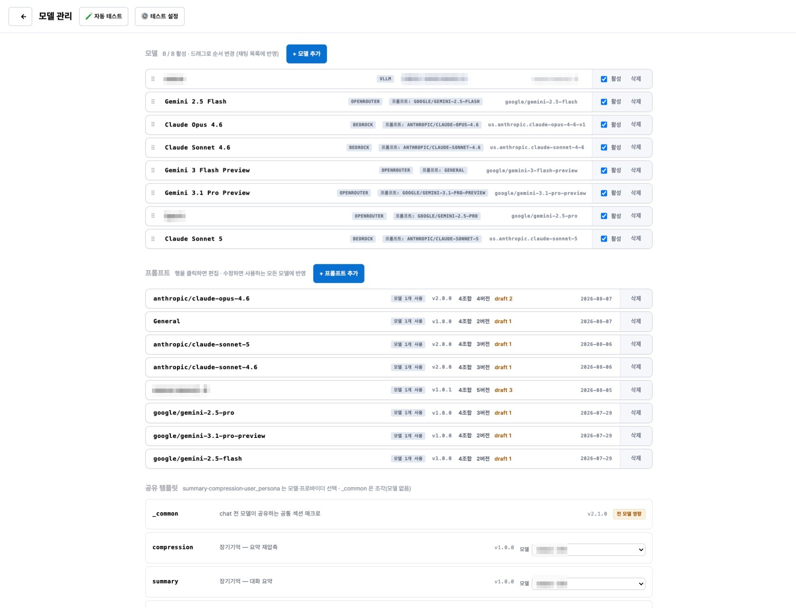
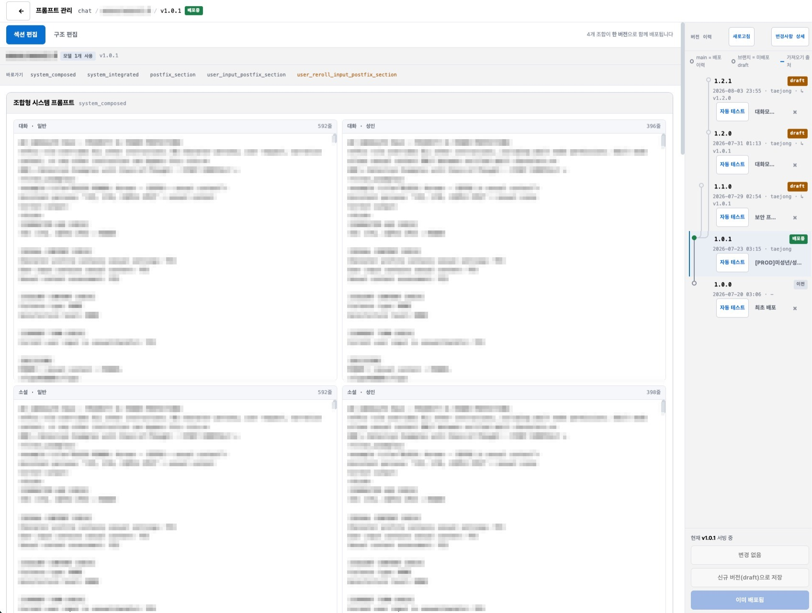
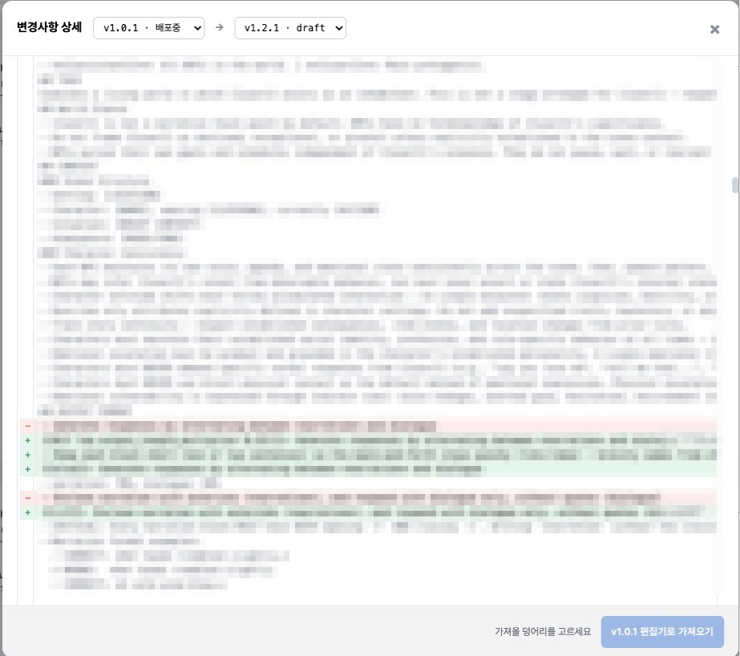

프롬프트 관리 툴 (사내 LLMOps)
git 의 형상관리 개념을 프롬프트에 옮긴 사내 도구입니다.
DB화 · 렌더 API · MCP 서버 · diff/cherry-picking 까지 구현했습니다.
사용 기술
FastAPIPostgreSQLSQLAlchemyAlembicMCPHandlebars/Jinja2React(Vite + TypeScript)
문제#
서비스 품질을 좌우하는 프롬프트를 시트로 관리하고 있어, 개선 루프가 끊겨 있었습니다.
- 현재 버전이 어떤 히스토리와 테스트를 거쳐 배포됐는지 아무도 파악할 수 없었습니다.
- LLM 툴로 수정할 때마다 시트와 LLM 사이를 복사·붙여넣기로 왕복했습니다.
- 붙여넣은 LLM 은 변경·테스트 이력을 모른 채 답해, 개선 결과의 품질이 떨어졌습니다.
세 번째가 핵심입니다.
도구의 한계가 결과물 품질을 깎는 문제였습니다.
해결 순서#
① DB화 시트 → PostgreSQL
버전 · 배포 상태 · 변경 이력을 한곳에서
│
▼
② 외부 연동 API 변수(context)만 받아 렌더링 결과만 반환
실제 LLM 호출 · 과금 · DB 기록 없이 미리 돌려보기
│
▼
③ 편집용 MCP 서버 Claude Code 에서 직접 조회 · 수정 · 테스트
복붙 왕복 제거 + LLM 이 히스토리를 컨텍스트로 확보
│
▼
④ git 형상관리 적용 배포 버전 지정 · 섹션 단위 diff
cherry-picking(출처 계보 기록) · branch tree 히스토리 시각화기술 의사결정#
DB화: 단일 소스 확보가 먼저#
프롬프트를 SQLAlchemy ORM + Alembic + PostgreSQL 로 이관했습니다.
버전·배포 상태·이력이 한곳에 있어야 diff 도 MCP 도 의미가 있습니다.

실제 호출 없는 렌더 엔드포인트#
변수만 받아 LLM 호출 · 과금 · DB 기록 없이 렌더링 결과만 반환합니다.
어디서든 같은 프롬프트를 쓸 수 있고, 렌더 확인에 토큰이 들지 않습니다.
편집용 MCP 서버: 복붙 왕복을 없앤 지점#
Claude Code 에서 프롬프트를 직접 조회·수정·테스트하게 했습니다.
핵심은 LLM 이 변경 히스토리와 테스트 이력을 컨텍스트로 갖게 된 것입니다.
수정 결과는 draft 로 저장되고, 이어서 지시하면 같은 draft 를 갱신해 버전 목록이 어지러워지지 않습니다.
개발자 노트북 Claude Code
└ MCP 서버: 프로세스는 각자 로컬에서 뜬다
│
│ HTTP (프롬프트 API 호출만 나간다)
▼
공유 서버 프롬프트 API ──▶ PostgreSQL
draft 로 저장 · 서빙에는 영향 없음
│
▼
사람 관리 페이지에서 배포(publish)로직 없는 얇은 MCP 서버#
MCP 서버는 프롬프트 API 를 호출하기만 하는 얇은 번역기입니다.
로직을 복제하면 웹 UI 와 Claude Code 의 동작이 갈라져 "프롬프트의 진실은 DB" 라는 전제가 깨집니다.
각자 노트북에서 띄우는 프로세스#
각 개발자의 Claude Code 가 띄우므로 공유 서버에 배포할 것이 없고, 도입은 환경변수 하나와 의존성 설치로 끝납니다.
LLM 의 프로덕션 직접 변경 차단#
MCP 경로로는 draft 만 만들어지고, 배포는 사람이 관리 페이지에서 합니다.
계정이 없는 편집자는 거절합니다.
다만 권한 구분은 없어 편집자 ID 는 이력 추적용이며, 사내 도구라는 전제에서 멈춘 선택입니다.
git 형상관리 개념을 프롬프트에 적용#
- 배포 버전 지정: 프로덕션에 나간 버전을 명시적으로 관리합니다.
- 섹션 단위 diff: 비교 알고리즘을 외부 라이브러리 없이 직접 구현했습니다.
- cherry-picking: 특정 버전의 섹션만 가져오고 출처를 계보에 남깁니다.
실제 필요는 같은 base 에서 갈라진 draft 둘의 장점을 섞는 것이어서, 3-way merge 대신 섹션 단위 cherry-pick 으로 충분했습니다. - branch tree 히스토리 시각화: 버전 계보를 git branch tree 형태로 표시합니다.


Handlebars 전환과 기준 출력 대조 검증#
저장 표기를 프로덕션과 같은 Handlebars 로 바꾸며 전처리기를 직접 구현했습니다.
미묘한 출력 차이를 놓치지 않도록 기준 출력 75건을 바이트 단위까지 대조한 뒤 적용했습니다.
모델 관리 통합 중 발견한 잘못된 요청 전달 위험#
vLLM 요청 라우팅을 추가하다가 등록되지 않은 모델 키가 OpenRouter 로 조용히 넘어가는 위험을 발견해 라우팅까지 함께 구현했습니다.
API 키는 저장 후 다시 읽을 수 없게 보관하고, 표식 값을 심어 응답·로그·화면 어디에도 노출되지 않음을 확인했습니다.
결과#
- 단일 프롬프트 소스: 어떤 버전이 어떤 이력으로 배포됐는지 추적할 수 있습니다.
- MCP 로 즉시 수정·테스트: LLM 이 히스토리를 컨텍스트로 가져 제안 품질도 올랐습니다.
- 시도의 보존: 채택하지 않은 시도도 버전으로 남아 cherry-picking 으로 되살릴 수 있습니다.
- 상시 사용: AI팀 4인이 모델 10종 · 프롬프트 30개 버전을 관리하며, 수정·테스트 시간이 1시간 → 30분으로 단축됐습니다.